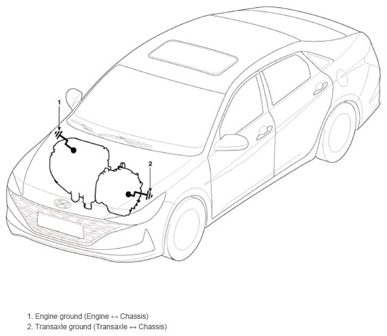

LEMON Manuals
: Even more car manuals for everyone: 1960-2025
Home
>>
Hyundai
>>
2022
>>
Elantra N Line, Standard Trans
>>
Repair and Diagnosis
>>
Electrical
>>
Charging Systems
>>
Charging System - 1.6L (Except HEV)
>>
Repair Procedures
>>
Inspection
>>
Inspection Item
>>
Wiring Harness Ground State Inspection
Wiring Harness Ground State Inspection
NOTE:
Ground state
Mounting bolt tightening state (Chassis)
Mounting bolt tightening state (Engine)
Check the status of ground fault by chassis paint

Courtesy of HYUNDAI MOTOR AMERICA
NOTE:
Check the ground point.
(Refer to System Wiring Diagrams Harness Layout - "Ground Point")